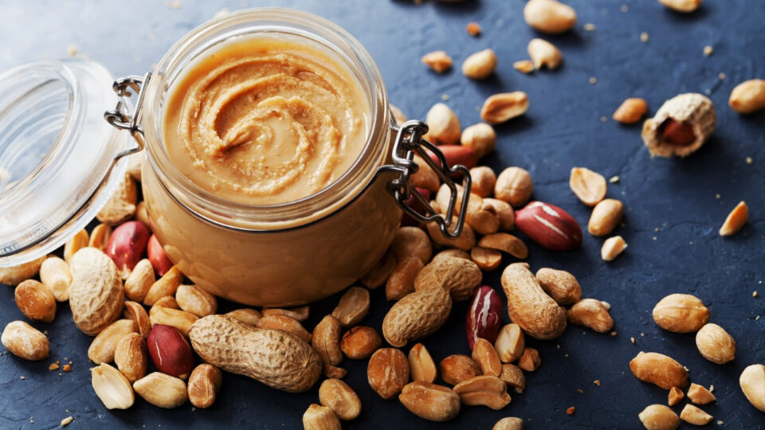

Урбеч

Описание
Урбеч — это натуральная паста из сырых орехов или
семян, перетертых до состояния густой массы
Ингредиенты
- абрикосовые косточки
- семя подсолнечника
- семя тыквы
- семя льна
- мед
- сливочное масло
Шаги
- сырые семена слегка обжарить на сковороде без масла
до золотистого цвета.
- Поместите семена в блендер или кухонный комбайн.
Измельчайте до получения однородной массы.
- Если масса слишком густая, добавьте растительное
масло и продолжайте измельчать до достижения желаемой
консистенции.
- По желанию добавьте мед, сахар или соль и тщательно
перемешайте.
- Переложите готовый урбеч в стерилизованную банку
и храните в холодильнике.